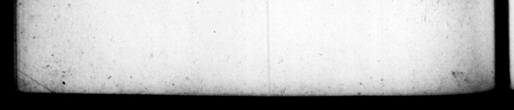

tim % e „ gi in unum annum, ſ er am iteratis] 5 ue ret dinem tin iN res wo 3 Ac, ne quid circa hec LY ati ad detine170 Gum praleit 1 eus ur s res egert à M te, Hel ah _ du rip his v ame unn uu, conr v0 um, cell iter re. gg e 3 eee 9 ohr Are Parius debe wt Nerone di 4 nes revertay. Cantante eo, n receiaria quidem cauſa exce. dere hearty licitupi erat. * 10 & enix Js Uk theo in fpec Ns dicuntiu, de multi — als Dae tendi Badandte * 97 is biene rnd 8 aut fureſilu muro, a * morte N Lager "cart. 5 autem trepide ans ieque Sh quant ne ale — quo metu ju— vix's 6 poreſt. Adverſati6s qua fi plane conditio. nis CN, obſeryare, capwe infamar® ſecrers, . nunqqu am ex occutſu maledictis inceſſere; ac, 1 qui arte præcellerent, corrumpere eriàm ſolebat. Haide autem, prius qu im ineiperet, reverent ĩſme A omnia ſe fadende fe eyentum in * 1282 i llos, ut ſaFientes 2 decdos viros fortuits athere excludere : atque ut au deret hortantibus, Kquiore à. nimo revedebat : ac ne ſic qui— 7 EI : 4 : £3 : a A 14 2360 — 2 ET. AAN O. Gr 75 th broughe tb 8 1 Kere 1 ; b — others - bug rione dilatay ut N * * ad mieted m to his valle. And ſiopen 8 . by pes them requeſted to i — picatt's «ft. | — ib, Ny * he Greeks alone had an car 83 muſick, 48. —_ proper Judges: of a his fttainments immediate ern Hur durmey, after he e ae of Faye 7 mad made Fe mieſtal per fobmance in os the altar of Jupiter 13. et deiuceps obi. * ared at — it omnta, Nam & qua diverx 2 wears þ Games in ſiſſimoruin remporu — K - 4s 225 in ciffetens he broug þe wit s _ — . order d to 1 K ſeeond time in the ſame gem ruſtum, he CEE yon aste and wiſh "for my f return, on aught rather ta viſe and with _ —— wit 2 3 a tk — * time body was — eu of th bon Mae up auy account, fey ft ones 2 24 tere; and many berg quice ren wt with hearing and applauding him, bt po the rden g were hun, ſlugs a. over _— o/ coler+ , the prize from e and SEE awe tre judges in 3 F his advey) arves upon 4 vel with him, he would weech them "narrowly, 2 at ca teh, defum/ them friva:ely, and ſometimes 2 * them, rail at them 3 ex or, bviby : t oa, ; ag berve? K.— s than ſumſoiſ 1, ways addreſſed the judges pn the an feundeſt rev,rence, before he begs, 1 —
